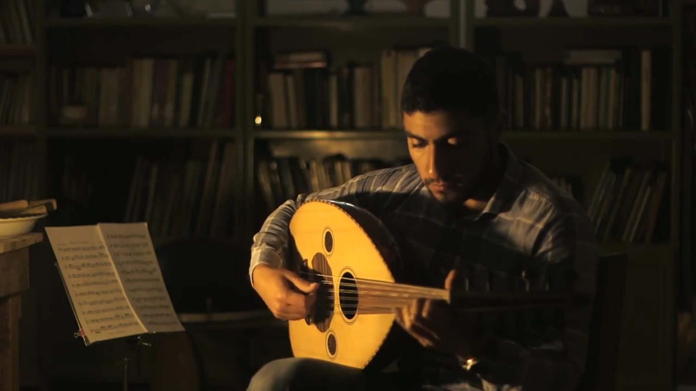

Winter 2027
Ethno on the Road
A concert tour of central Sweden with musicians from Ethno, the international folk music gathering. Sarraj will be playing oud.
About the tour →
سراج السرساوي
Sarraj Alsersawi is a Palestinian musician and engineer, born in Gaza in 1998. He completed his intermediate oud studies at the Edward Said National Conservatory of Music in 2017, where he went on to teach and became a key oud player in the Gaza Orchestra and several other ensembles. Sarraj won first place in the Arabic music section of the Palestine National Music Competition in 2021. In 2023 he moved to Ireland, where he lives today.
Read full bio →
A concert tour of central Sweden with musicians from Ethno, the international folk music gathering. Sarraj will be playing oud.
About the tour →A collaboration between El-Funoun, the Palestinian dance troupe, and choreographer Catherine Young, bringing together Palestinian and Irish dancers. Sarraj was part of the music team.
See the post →The international folk music gathering in Rättvik, Sweden, where young musicians from around the world share and arrange music from their traditions. Sarraj took part on oud.
About Ethno →

Sarraj featured in Cara Sa Cheol ("A Friend in Music"), TG4's six-part series pairing Irish-language artists with musicians from Ireland's new communities. He teamed up with Donegal singer and accordionist Catríona Ní Ghribín, ending in a live concert for a local audience.
Watch on TG4 Player → Read the article →A new project bringing together Irish, Palestinian and Lebanese music and dance. Sarraj performed with Eoghan Ó Ceannabháin, Loor Amin and Niamh Keady-Tabbal, exploring stories of exile, emigration, love and resistance, at All Saints Church for Phizzfest 2026 in Dublin.
About the event →